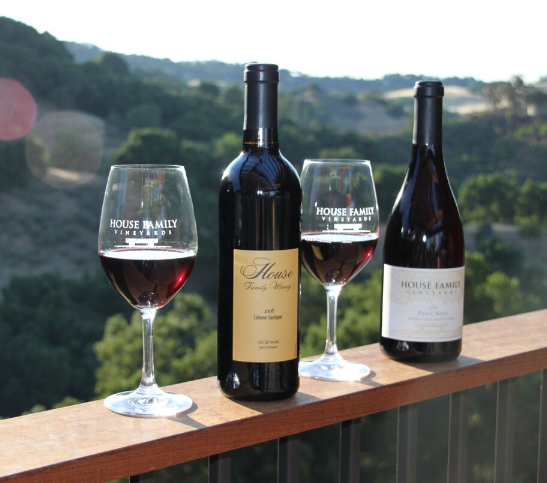
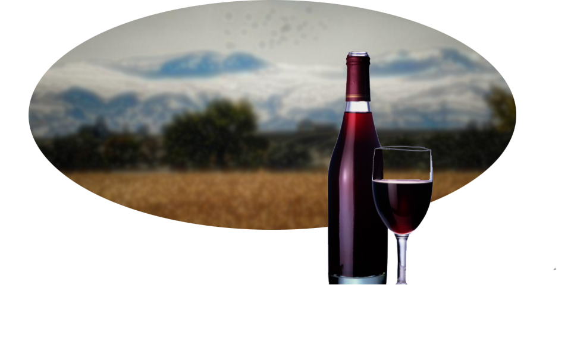

Los sabores del otoño llegan con la estación. Disfruta la sensación del otoño con la colección "Las Hojas Caídas"; cinco de nuestros mejores vinos de las cosechas de 1936, 1950 y...
Cosecha 'Nuevo Siglo'

1901
Sobre la Cosecha
Tres generaciones de encargados en nuestra vinería cargaron con las responsabilidad de asegurarse que la cosecha de 1890 añejara correctamente hasta hoy...